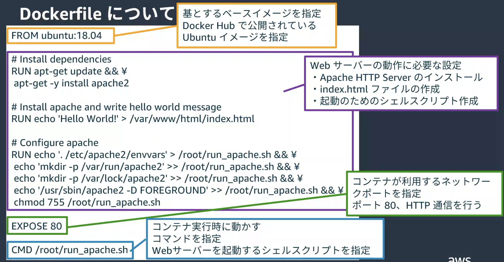

3. ECS¶
3.1. コンテナのメリット¶
価値の大きいサービス、プロダクトを提供するためには、環境の変化に対応する必要がある。 このニーズに応えるために、価値提供サイクルを早めること、すなわちリリースの速度の高速化が求められている。 開発者がアプリケーション開発に集中し、俊敏なリリースをする環境が重要である。
これらの課題を解決するのがコンテナである。 ランタイムや依存物といった環境間の差分をなくし、リリースを素早くすることができる。
さらに、オーケストレーターによってコンテナのデプロイやスケーリングといった作業は自動化することができる。
3.2. ECS(Elastic Container Service)¶
コンテナオーケストレーションサービスで、なんのコンテナをどう動かすのか命令を出す。
ECSでは、４つの重要な構成要素がある
クラスター
タスク定義
サービス
タスク
3.2.1. クラスター¶
コンテナを動かすための論理的なグループ
ECSを作成する際に、最初に作成する。
設定内容はクラスター名とクラスターが起動するVPCおよびサブネット。
3.2.2. タスク定義¶
タスクを構成するコンテナ郡の定義
コンテナとして利用するイメージや、割り当てるCPU/メモリ、タスクに割り当てるIAM Roleといった設定を行う。
設定内容はタスク定義名、利用するコンテナイメージのURI、タスクを立てる環境のインフラ設定など。 ECSでコンテナを稼働させる環境はEC2とFargateがあるが、今回はFargateを採用する。
タスク定義は更新されるたびに新しいリビジョンが作成されて、サービスからタスク定義とリビジョンを選択することでどのようなタスク定義でタスクを作成するかを指定する。
3.2.3. サービス¶
タスクの管理を行う。
タスクの実行数の定義や、実行中のタスク実行数の維持を行う。
また、ELBとの連携もサービスが管理する。
3.2.4. タスク¶
タスク定義に基づいて、起動されるコンテナ郡。
タスク内で指定されたコンテナは同一ホスト上で実行される。
3.3. ECR(Elastic Container Resistory)¶
コンテナを保存・管理するマネージドサービス
基本的な使い方は、ECSでタスク定義を作成するときに利用するコンテナイメージを指定するが、その時にECRに保存したイメージを指定する。
3.4. H4B¶
AWSが無料公開している、ECSのH4Bの内容を実施する
3.4.1. 全体アーキテクチャ¶
H4Bの実施内容
3.4.2. コンテナイメージの作成¶
Dockerfileを作成して、コンテナイメージの定義を記述
docker buildコマンドでコンテナイメージを作成する
3.4.2.1. Dockerfileの作成¶
ubuntuをベースとして、apacheをインストールするコンテナ
# コンテナのベースイメージ
FROM ubuntu:18.04
# Install dependencies
RUN apt-get update && \
apt-get -y install apache2
# Install apache and write hello world message
RUN echo 'Hello World!' > /var/www/html/index.html
# Configure apache
RUN echo '. /etc/apache2/envvars' > /root/run_apache.sh && \
echo 'mkdir -p /var/run/apache2' >> /root/run_apache.sh && \
echo 'mkdir -p /var/lock/apache2' >> /root/run_apache.sh && \
echo '/usr/sbin/apache2 -D FOREGROUND' >> /root/run_apache.sh && \
chmod 755 /root/run_apache.sh
# コンテナが利用するポート
EXPOSE 80
# コンテナ起動時の実行コマンド
CMD /root/run_apache.sh
詳細な解説

3.4.2.2. コンテナイメージの作成¶
DockerfileからDocker imageを作成するdocker buildの実行
カレントディレクトリにあるDokcerfileを対象として、buildコマンドが走る。
-tはタグのオプションで、作成されるコンテナイメージの名前はhello-worldになる
docker build -t [IMAGE_NAME] .
docker build -t hello-world.
作成されたイメージの確認
docker images
hello-worldのイメージがあることを確認する。
REPOSITORY TAG IMAGE ID CREATED SIZE
hello-world latest f07f769497c4 2 minutes ago 202MB
3.4.2.3. コンテナの起動¶
docker imageからコンテナを起動するコマンドdocker runの実行
-pはクライアント側とコンテナ側のポートのマッピング8080がクライアントポート、80がコンテナ側のポート-dは作成されたコンテナが起動状態になる--nameは起動するコンテナの名前の指定
docker run -d -p 8080:80 --name [CONTAINER_NAME] [IMAGE_NAME]
docker run -d -p 8080:80 --name h4b-local-run hello-world
作成されたコンテナの確認
docker ps
NAMEに指定したh4b-local-runがあることを確認する
CONTAINER ID IMAGE COMMAND CREATED STATUS PORTS NAMES
da0b37e94be8 hello-world "/bin/sh -c /root/ru…" About a minute ago Up About a minute 0.0.0.0:8080->80/tcp, :::8080->80/tcp h4b-local-run
curlコマンドで動作確認
curl localhost:8080
Hellow world!が表示される。
3.4.2.4. コンテナへのログイン¶
dockerコンテナへログインするコマンドdocker execの実行
-i標準入力を開く設定-t開いた標準出力を操作するための設定
docker exec -it h4b-local-run bash
3.4.3. ECRへのpush¶
3.4.3.1. リポジトリの作成¶
まずは、リポジトリを作成する。AWSコンソールからECRのページに移動して、リポジトリを作成する。
作成する際にはプライベートを選択して、適切なリポジトリ名を入れる。
作成されたECRのURIを使って、ローカルのDockerImageとリポジトリの紐付けを行うので、メモしておく。
3.4.3.2. コンテナイメージのpush¶
コンテナのイメージに、リポジトリのURIを指定することで、イメージとリポジトリの関係性を定義する。
dockerfileからbuildする時に、リポジトリのURIを指定する場合はdocker buildでタグ名指定
docker build -t [ECR_URL]:[VER]
docker build -t [AWS_ID].dkr.ecr.ap-northeast-1.amazonaws.com/ecr-h4b-helloworld:0.0.1 .
すでに作成されている、docker imageからリポジトリのURIを指定する場合はdocker tagでタグ名指定
docker tag [DOCKER_IMAGE] [ECR_URI]:[VER]
docker tag ecr-h4b-helloworld:latest [AWS_ID].dkr.ecr.ap-northeast-1.amazonaws.com/ecr-h4b-helloworld:0.0.1
ECRとの通信をするために認証を通す
aws ecr get-login-password --region ap-northeast-1 | docker login --username AWS --password-stdin [AWS_ID].dkr.ecr.ap-northeast-1.amazonaws.com
ECRへpushする
docker push [AWS_ID].dkr.ecr.ap-northeast-1.amazonaws.com/ecr-h4b-helloworld:0.0.1
ECRから新しいImageが追加されていることを確認する
3.4.4. VPCの設定¶
ECSを作成するために VPCを作成する。 具体的な手順はH4Bの手順書を参照する。
インターネットからALBを経由して、ECS上のコンテナにアクセスするアーキテクチャとする。
3.4.5. ECSのクラスタ作成¶
AWSコンソールのECSから、クラスターの作成を選択。
クラスター名と作成した VPCとサブネットを設定する。
container insightをONにするとCPUなどのメトリクスを収集してくれる。
3.4.6. ECSのタスク定義¶
アプリケーション環境はFargateを指定
タスク定義名と、作成するコンテナのイメージを指定する。 今回はECRにあるコンテナを指定。
3.4.7. ECSのサービス作成¶
作成したクラスターを選択して、サービスからデプロイを選択。
起動する、環境でFargateを指定する。 サービス名、起動するタスクのタスク定義とリビジョンを指定。
3.4.7.1. ALBの設定¶
ECSのサービス定義の中で、 ALBの設定を行う。
デプロイが完了すると、AWSのコンソールから、サービスの起動およびタスクの起動が確認できる。

サービスのネットワーキングタブから、ALBのオープンアドレスを確認して、アクセスすると動作確認ができる。